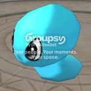
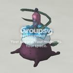

Plant
Escagot
Level : 75
HP : 4,750
EXP / Job EXP : 4,165 / 4,250
Attribute :
 Personality
Personality : Non Active
Map :
Baubab Forest
Item : Soda / Sticky / Row / Kale /
Small Pack
Pururu
Level : 1
HP : 23
EXP / Job EXP : 5 / 2
Attribute :
Personality : Non Active
Map :
West Acronia Field /
North Acronia Field /
South Acronia Field /
East Acronia Field /
Acronia Forest /
Utena Lake /
Snop Hill
Item : Seriko Potion / Seriko / Soda / Blue Seriko /
Row /
Wax /
Pururu Stamp
Milk Pitcher
Level : 6
HP : 41
EXP / Job EXP : 12 / 15
Attribute :
 Personality
Personality : Non Active
Map :
Acronia Forest /
Fareast Highway /
Eastor Cape
Item : Milk / Butter / White Seriko / Riped Magical Book / Magic Crytal /
Milk Pitcher Stamp
Amber Jelly
Level : 7
HP : 60
EXP / Job EXP : 17 / 14
Attribute :
 Personality
Personality : Non Active
Map :
South Acronia Field /
Utena River /
Steap Desert
Item : Seriko / Cold Candy / Orange Seriko /
Sugar / Life Crystal /
Amber Jelly Stamp
Cool
Level : 10
HP : 75
EXP / Job EXP : 20 / 21
Attribute :
Personality : Non Active
Map :
Snop Hill /
Snop Snowfield /
Snop Triangle /
Nozarin Cape
Item : Turbid / Mineral Water / Riped Magical Book /
Row / Light Blue Seriko /
Cool Stamp
Yellow Pururu
Level : 11
HP : 78
EXP / Job EXP : 17 / 29
Attribute :
 Personality
Personality : Non Active
Map :
Undead Island /
Morg Cliff /
Killer Bee Hill
Item : Seriko / Yellow Seriko / Butter / Row /
Yellow Pururu Stamp
Coaltar
Level : 11
HP : 75
EXP / Job EXP : 32 / 19
Attribute :
 Personality
Personality : Non Active
Map :
Warship Island / Ancient Dungeon[เขาวงกตใต้ดิน]
Item : Oil / Machine Oil / Black Seriko / Wax /
Smoothy Wax /
Coaltar Stamp
Green Pururu
Level : 12
HP : 80
EXP / Job EXP : 26 / 29
Attribute :
Personality : Non Active
Map :
East Acronia Coast /
Eastor Cape /
Fareast Highway
Item : Veggy Juice / Antidote Fruit / Magic Crystal / Green Seriko /
Four Leaves Clover /
Green Pururu Stamp
Mage Pururu
Level : 15
HP : 110
EXP / Job EXP : 39 / 46
Attribute :
 Personality
Personality : Link All
Map :
North Endless /
Middle North Mountain /
Frozen Cave B1F-B3F
Item : Mana Water / Seriko / Purple Seriko /
Wax /
Smoothy Wax /
Mage Pururu Stamp
 Ocher Jelly
Level
Ocher Jelly
Level : 21
HP : 210
EXP / Job EXP : 82 / 105
Attribute :
Personality : Link All
Map :
Teritory Cave B1F-B3F / Ancient Dungeon[ค้นหาเขาวงกต]
Item : Seriko / Row / Wax / Smoothy Wax / Red Seriko /
Orge Jelly Stamp
Euler
Level : 28
HP : 380
EXP / Job EXP : 160 / 146
Attribute :
Personality : Link All
Map :
Ancient Coal Mine B1F
Item : Oil / Machine Oil / Black Seriko / Wax / Smoothy Wax
Metalica
Level : 40
HP : 25
EXP / Job EXP : 1,166 / 116
Attribute :
Personality : Escape
Map :
North Endless /
Ancient Coal Mine B2F-B3F
Item : Steel Nugget / Silver Nugget / Gold Nugget /
Platinum Nugget /
Orihalcon /
Metalica Stamp
Puchi Metalica
Level : 15
HP : 8
EXP / Job EXP : 116 / 11
Attribute :
Personality : Escape
Map :
South Acronia Field /
North Acronia Field /
West Acronia Field /
East Acronia Field /
Acronia Forest /
Utena Lake /
Killer Bee Hill /
Steap Desert /
Fareast Highway / Ancient Dungeon[เขาวงกตใต้ดิน]
Item : Steel Nugget / Silver Nugget / Gold Nugget /
Platinum Nugget /
Orihalcon
Lost Metalica
Level : 24
HP : 14
EXP / Job EXP : 500 / 50
Attribute :
Personality : Escape
Map :
Undead Island /
Eastor Cape /
North Endless /
Killer Bee Hill /
Warship Island /
Steap Desert /
Snop Triangle /
Snop Snowfield /
Snop Hill /
Morg Cliff /
Utena River /
Fruit Forest /
Sourin Cape /
Northern Highland /
Middle North Mountain /
East Acronia Coast /
Fareast Highway / Ancient Dungeon[เขาวงกตใต้ดิน]
Item : Steel Nugget / Silver Nugget / Gold Nugget /
Platinum Nugget /
Orihalcon /
Lost Metalica Stamp

Jumbo Pururu
Level : 28
HP : 10,000
EXP / Job EXP : 1,500 / 2,250
Attribute :
Personality : Non Active
Map : Ancient Dungeon[ค้นหาเขาวงกต]
Item :
Soda /
Blue Seriko /
Row /
Four Leaves Clover
 Wasabi Mandrake
Level
Wasabi Mandrake
Level : 77
HP : 5,800
EXP / Job EXP : 3,000 / 3,000
Attribute :
Personality : Active
Map :
Eastor Cape / Ancient Dungeon[บุกรุกAncient]
Item : Tumtum Grass / Marica Grass / Aboree Grass / Toxin /
Magic Crystal /
Silver Medal
Hot Wasabi
Level : 80
HP : 1,900,000
EXP / Job EXP : 57,600 / 42,000
Attribute :
Personality : Non Active
Map :
Utena Lake
Item :
Copper Medal /
Tiny Medal /
Heart Ruby /
Power Transister /
Broken Chain Sword /
Shoulder Devil Boost
Roper
Level : 21
HP : 120
EXP / Job EXP : 136 / 128
Attribute :
Personality : Non Active
Map :
Steap Desert /
Sourin Cape /
Fruit Forest / Ancient Dungeon[ค้นหาเขาวงกต]
Item : Seriko / Riped Magical Book / Rover Moustache / Magic Crystal / Magic Candy /
Copper Medal /
Roper Stamp
Tentacle
Level : 33
HP : 430
EXP / Job EXP : 340 / 425
Attribute :
Personality : Active
Map :
Steap Desert /
Sourin Cape / Ancient Dungeon[นักฆ่าเขาวงกต]
Item : Magic Candy / Riped Magical Book / Rover Moustache / Copper Medal /
Silver Medal /
Tentacle Stamp
Fulu Fulu
Level : 40
HP : 660
EXP / Job EXP : 571 / 530
Attribute :
Personality : Active
Map :
Bed Rock of Soul /
Volcano / Ancient Dungeon[นักฆ่าเขาวงกต เขาวงกตใต้ดิน]
Item : Magic Candy / Riped Magical Book / Rover Moustache / Orange Seriko /
Copper Medal /
Silver Medal /
Fulu Fulu Stamp
 King Roper
Level
King Roper
Level : 10
HP : 10,400
EXP / Job EXP : 6,600 / 6,000
Attribute :
Personality : Active
Map :
Steap Desert / Ancient Dungeon[นักฆ่าเขาวงกต]
Item : Rover Moustache / Rapis Razuri / Pelsona /
King Roper Stamp
Marius
Level : 1
HP : 80
EXP / Job EXP : 8 / 5
Attribute :
Personality : Non Active
Map :
Sky Tower Island [Dominion] /
Warship Island [Dominion] /
Golden Bridge
Item : Seriko Potion / Apple / Riped Magical Book
/ Life Crystal / East Fruit Seed /
Wonderful Tree Seed
Dokumarius
Level : 12
HP : 300
EXP / Job EXP : 38 / 42
Attribute :
Personality : Non Active
Map :
Warship Island (Night) /
Golden Bridge (Night)
Item : Veggy Juice / Antidote Fruit / Life Crystal /
Toxic Apple /
Wonderful Tree Seed
 Alraune
Level
Alraune
Level : 120
HP : 71,980
EXP / Job EXP : 12,525 / 12,840
Attribute :
Personality : Non Active
Map :
Item :
Alaune's Tentacle / Gigogigo Grass / Droped Item1 /
Grief Watch

Alraune(Blue)
Level : 125
HP : 75,845
EXP / Job EXP : 18,795 / 18,960
Attribute :
Personality : Non Active
Map :
Item : Rune Grass / Droped Item1
 Alraune(Yellow)
Level
Alraune(Yellow)
Level : 130
HP : 81,110
EXP / Job EXP : 22,365 / 26,580
Attribute :
Personality : Non Active
Map :
Item : Alaune's Tentacle / Alaune's Strawberry /
Forbidden Fruit / Droped Item1 /
Alaune's Tentacle /
Alaune's Strawberry
 Alraune(Black)
Level
Alraune(Black)
Level : 145
HP : 85,860
EXP / Job EXP : 310,350 / 327,000
Attribute :
Personality : Active
Map :
Item : Alaune's Tentacle / Alaune's Strawberry /
Forbidden Fruit / Droped Item1 /
Alaune's Strawberry /
Zedar Wood